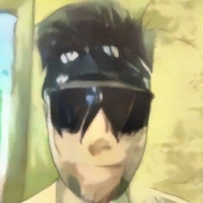

Главный положительный персонаж манги и аниме «Шаман Кинг».Очень сильно любит свою приору. Сильный шаман из древнего татарского рода Илькиных. Владеет техникой "Пьяный мастер". По характеру простой и добродушный парень, ленивый и мечтательный. Любит музыку, постоянно ходит в наушниках и бандане, доставшихся ему от отца. Пытается в каждом найти что-то хорошее и находит. Он всё время спокоен и его очень сложно разозлить. Только если, например, сказали, что борьба не круто.
